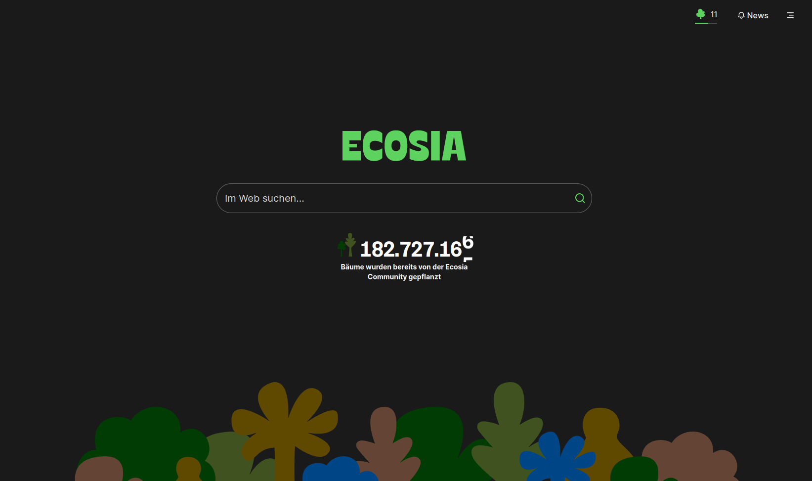
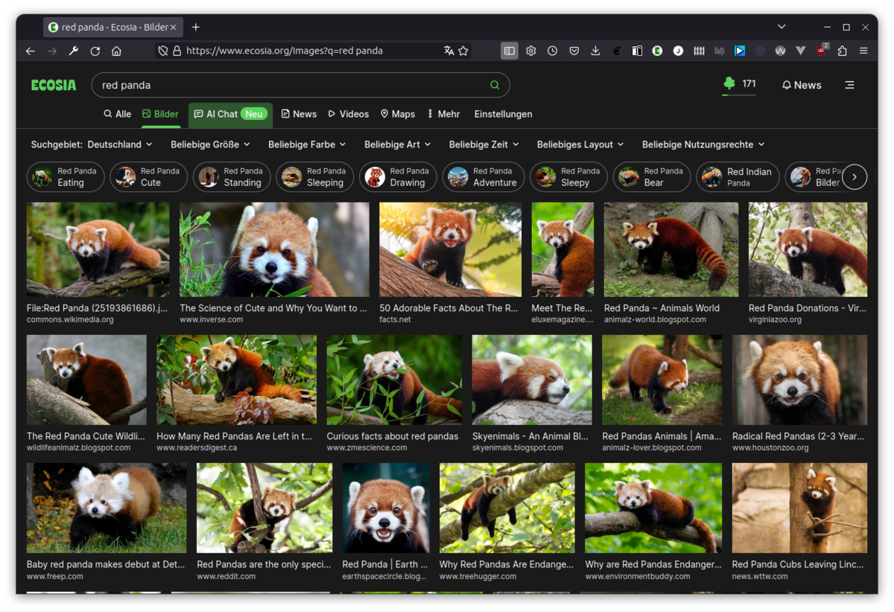
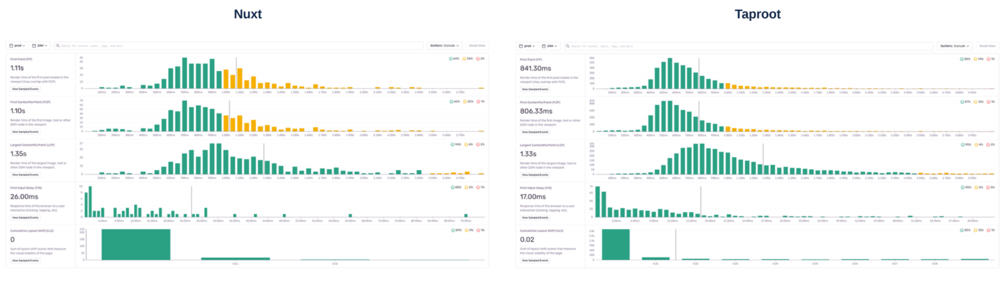

Taproot
I've spent 4 years at Ecosia, the search engine that plants trees. My last project as Principal Engineer was a specialised in-house web app framework called Taproot, which strove to make the Ecosia search experience more performant, future-proof and give the engineering teams profound control over their applications.
As a search engine, Ecosia faces an atypical set of challenges. It presents rich interactive pages, which are only complete once a long API request (the search request) completes. This can lead to rather long perceived loading times, and Ecosia engineers employ a number of strategies to mitigate the problem. The HTML is largely server-rendered, and is meant to be usable without JavaScript, too.
Ecosia has used Nuxt to render its Vue.js UI for years. Nuxt allowed rapid development of new applications and provided a great starting point for Ecosia's modern web stack. However, over time engineers started to be restricted by Nuxt's "batteries included" API which did not give them control over exactly how the page is rendered. Page performance suffered as more and more JavaScript was being delivered to the browser, and Nuxt's easy-to-use abstractions became a burden on the codebase. To address this, I teamed up with Emanuele Marchi and Zoe Colley to develop an in-house web framework. The framework, called “Taproot”, began with a set of principles:
- No magic - Framework logic should be transparent, inspectable and easy to understand. Taproot should let us control almost every stage of the rendering process, and its interfaces should be explicit, rather than implicit.
- Less is more - Taproot should only have the features necessary for Ecosia's applications. Particularly on the client-side, we should execute as little code as possible. No unused code should be delivered to the browser.
- Simplicity over abstraction - Taproot should only provide abstractions if it reduces dependency on other parts of our stack. We prefer simpler code over extensible code.
Taproot was no attempt to “reinvent the wheel”. Rather, we made use of existing tools and libraries, but combined them ourselves to allow for the desired flexibility. Using Vike, we were able to implement server-side rendering (SSR) and client-side hydration, while controlling exactly how and when the Vue app is rendered on the client and server. We used HTML streaming to deliver parts of HTML to the browser before the search API call completed. This allowed the browser to start loading JavaScript, CSS, fonts and other assets during the long wait for the search results.
Another benefit of Taproot was the ability to directly inspect the SSR manifest file, which let us make informed decisions about pre-loading certain assets. We could for example add a preload link for the German translations JS bundle on a per-request basis, if we knew the user’s UI language is set to German. No third-party framework would be able to make choices like this for us, because it couldn’t know the specific requirements of our applications.
We first developed Taproot within the Settings application. This allowed us to test its performance impact with real traffic and make sure it covers the requirements of a typical Nuxt application. Once we were satisfied with Settings' performance, we extracted Taproot code into a separate library, including a simple CLI script and extensive documentation. We could then migrate the Images vertical. This is one of our higher-traffic applications which receives around 50 requests per second and crucially, serves search results so we could apply the “fetch while streaming” technique.
The Web Vitals metrics (measured on anonymised real traffic) above show:
- 35% improvement in First Input Delay - since JS is already loaded and parsed before search results arrive, it’s much more likely the app will react fast when the user starts interacting with the results
- 25% improvement in First Paint - because the browser has already prepared the DOM, CSSOM and the font, it’s much faster to paint contentful elements on the screen (also affects FCP)
- 27% improvement in First Contentful Paint - see above
- 2% improvement in Largest Contentful Paint - since this is the Images vertical, our LCP is partially bound by how fast the image thumbnails from our search provider’s CDN load. This is likely why we weren’t able to move this metric that much. Still, the slight improvement can be attributed to the fact that by the time image thumbnails start loading, there are no more CSS/JS/font assets to load.
CPU and memory usage also dropped significantly after migrating to Taproot. Lastly, decoupling SSR code from the UI framework allowed Ecosia to progressively swap out parts of the stack (such as upgrading Vue to version 3, or changing the state management library) without having to change the entire framework.
More information on the ideas behind Taproot and its development are in the slides for my talk at the Vue.js meetup in Berlin.